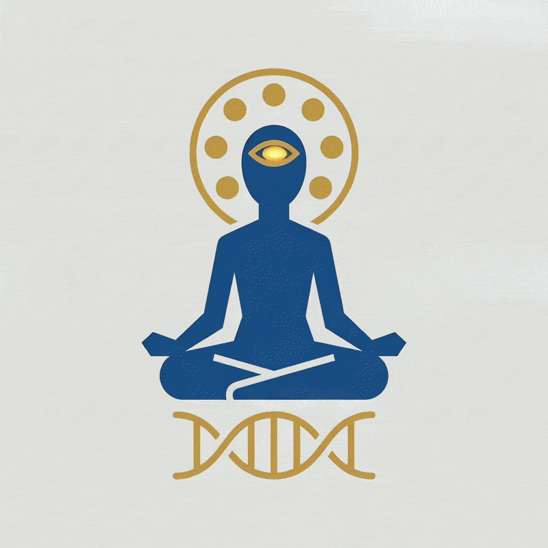

A D A M OS
the integrated ADAM operating system
open source · seeking contributorsLet us search together — for the dark light of the inner Dark Sun, and turn knowledge into the shape of reality.
Call it God, Source, Tao, the Self, or nothing at all — every tradition points to the same water. ADAM OS is not here to rename it. It is here to give you the tools to find it and the framework to experience it.
"Where the mind's focus goes, energy flows."
"As you see, so you will think. As you think, so you will judge. As you judge, so your character will be shaped. As your character is shaped, so your actions will be. As your actions are, so your future will be."
Vision → Thought → Judgment → Character → Action → Future
-
01
Universal viewpoint — the Truth Eye
Step outside the self and look back at it — the eye of truth, seeing the whole before the part.
"Perhaps neither of us is wrong, yet neither has seen the whole truth." Therefore, even if we do not subscribe to another's perspective, let us learn to respect it. Our outlook on life shapes our thoughts, character, actions, and future.
-
02
Ask the inner mind
Direct the question inward, not outward. The system does not answer to those who never ask.
-
03
Ready the body and mind
Every tradition has a word for this discipline. The yogic path calls it
Brahmacharya— conserving vital energy instead of spending it carelessly, then channeling it upward throughPrana-vayu, the breath of life.
Brahmacharya
Conservation of energy — the retention and stewardship of vital essence, rather than its dispersal.
Ojas SUBLIMATION
The refined vital essence generated when energy is conserved and rightly directed.
Good fortune · self-confidence · mental clarity · creativity
The visible traits of a mind and body under cultivation.
Which is, in the end, simply success.
ADAM OS is open source.
An operating system for the self — built in the open, for anyone, of any belief, searching for the same dark light.